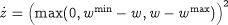
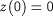
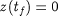
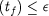

It is worth noting that enforcing a path constraint at the interval boundaries does not automatically guarantee that the constraints are not violated within the intervals. For many applications, this is not a major problem as path constraints tend to be "soft'' and minor violations can be tolerated. However, if this is not the case, a more stringent way of enforcing the constraint is to define a violation variablez within the relevant Model entity in the gPROMS project through the equation:

with initial condition,

and then impose the additional end-point equality constraint:

It can be verified that this end-point equality constraint can be satisfied if and only if the original path constraint is satisfied. In many cases, it is still worthwhile retaining the Interiorpoint constraints on w as this often leads to improved numerical performance. It may also be better to relax the end-point equality constraint to an inequality constraint:

where is a small positive tolerance. An implementation of path constraints is shown for the batch reactor example in the Reactor Model entity, the Initial section of the OPTIMISE_REACTOR Process entity, and the OPTIMISE_REACTOR Optimisation entity.